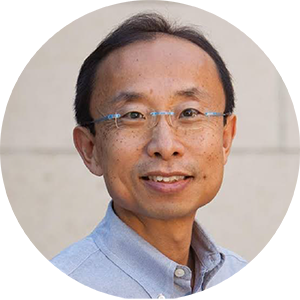
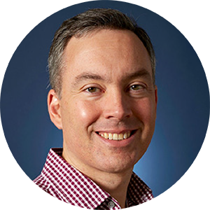

未來半導體人才趨勢論壇：產學對話
Empowering the Future of Semiconductor - Bridging Industry and Academia
時間
加州時間｜2025 年 9 月 25 日（四）下午 5:00 至 7:00
臺灣時間｜2025 年 9 月 26 日（五）上午 8:00 至 10:00
臺灣時間｜2025 年 9 月 26 日（五）上午 8:00 至 10:00
地點
史丹佛大學 Shriram Center（443 Via Ortega, Stanford, CA 94305）
形式
混合進行
• 現場參與：預計 50 至 80 人
• 線上參與：與臺灣觀眾連線（需事先報名）
• 現場參與：預計 50 至 80 人
• 線上參與：與臺灣觀眾連線（需事先報名）
亮點講者｜Featured Speakers





活動簡介｜About the Forum
在人工智慧與先進技術重塑全球產業的時代，半導體產業位居變革前線，是推動創新與進步的核心動力。當前對於高度專業技術人才的需求前所未有地迫切。本次論壇旨在強調培育因應挑戰、推動半導體產業持續發展之關鍵人才的重要性。
主要議題｜Key Topics
人工智慧時代的半導體人才重要性：
隨著人工智慧驅動現今多數科技進展，半導體所扮演的角色愈加關鍵。與會講者將探討半導體創新如何實現 AI 技術能力，以及為何培育該領域人才對持續技術進展至關重要。
教育策略與產學合作：
了解學界與半導體產業如何合作發展教育課程、實習與訓練機會，以培養學生與專業人士具備應用於實務的能力。
全球人才發展的挑戰與機會：
探討全球在半導體人才培育上的整體布局，包括各地區所面臨的挑戰與可能創造一致性與高素質全球人力的潛力機會。
未來技能與人才準備：
掌握半導體專業人員日益重要的新興技能與知識領域。與會講者將說明如何保持競爭優勢，確保人才具備迎接未來科技發展的準備。
活動議程｜Agenda
加州時間
活動內容
4:30 – 5:00 PM
報到與入場
5:00 – 5:05 PM
開場致詞
- 吳誠文 主委 / 國科會
- 黃錫瑜 主任 / 國研院科政中心
5:05 – 5:20 PM
專題演講：未來半導體人才
- David Horsley 教授 / 加州大學戴維斯分校
5:20 – 5:35 PM
專題演講．講者邀請中
- 美國應材公司
5:35 – 6:35 PM
台積電觀點：所需人才與實務需求分享
- 沈文冰 副處長 / 智慧應用整合處
- Tzung-Hua Lin / R&D Manager
- Steve Wang / Design Technology Platforms Manager
- Chun-Yu Lin / HR Manager
- TBC / Operation Manager
6:35 – 6:45 PM
現場問答
6:45 – 8:00 PM
茶會暨交流（僅限現場參與者）